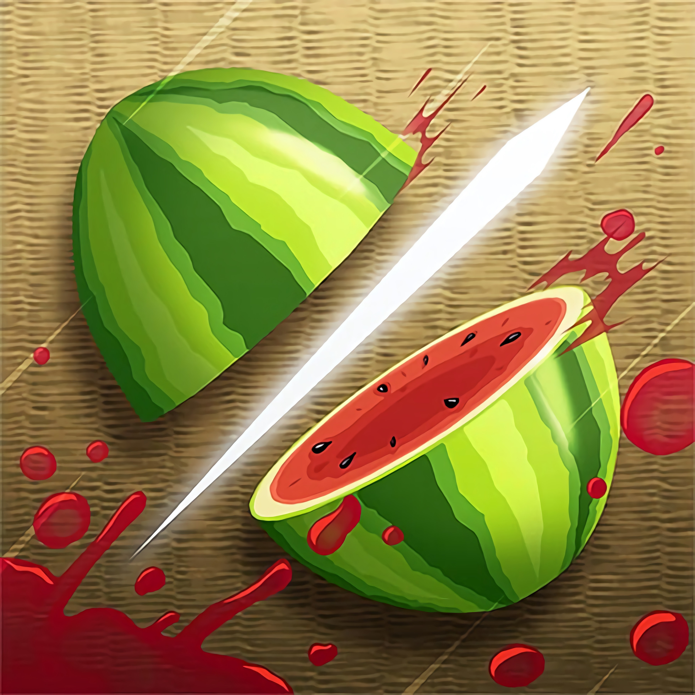

Fruit Ninja — видеоигра, разработанная Halfbrick Studios в Брисбене, Австралия. Была выпущена 21 апреля 2010 года для iPod Touch и iPhone, 12 июля 2010 года для iPad, 17 сентября 2010 года для устройств под ОС Android. Была выпущена на Windows Phone 22 декабря 2010 года.
скачать игру без смс и регистрации
Скачать next page